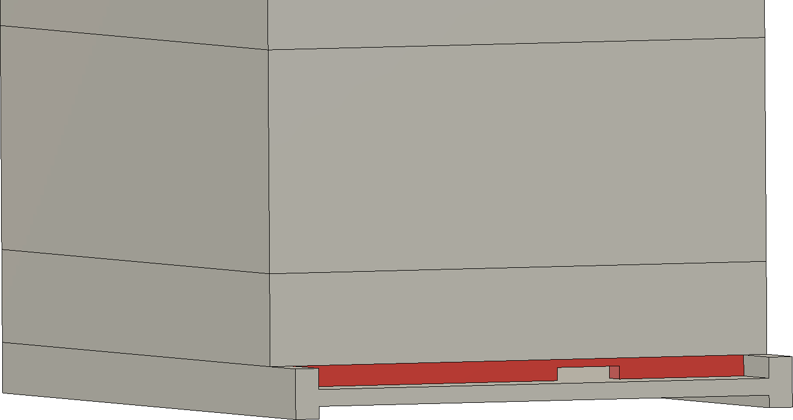

Overview

Typical Langstroth Hive Parts
The bottom board's entrance to the hive may be too big, and an entrance reducer may be needed to tighten down the opening.

Hive Bottom Board
They get used when the beekeeper wants to reduce the chance for robbing of a new hive, close up the entrance to keep the colony's heat in, or prevent larger pests from entering the hive (e.g., mice).
Is This Part Necessary?
On the Langstroth hive, this is not required. But, it is quite often utilized to implement the beekeeper's management approach.
Usage Notes
The idea of preventing larger pests should be noted. During the Fall, is is quite common for mice to look for their winter home. A bee hive is a great place for them to hibernate for the winter, and they will use that space if allowed.
To prevent that from happening, add 3/8" hardware cloth over the opening in the entrance reducer. Hardware cloth can be found from many on-line sources. One source is McMaster-Carr, p/n 9217T22. They sell it with 0.304" openings.
Does the Opening Go Up or Down?
As with other things, many beekeepers have strong opinions about this.
- Putting the opening down makes it easier for the bees to remove debris and dead bees from the hive.
- The argument for putting the opening up is that this reduces the ability for water to get into the hive (i.e., when snow on the bottom board melts).